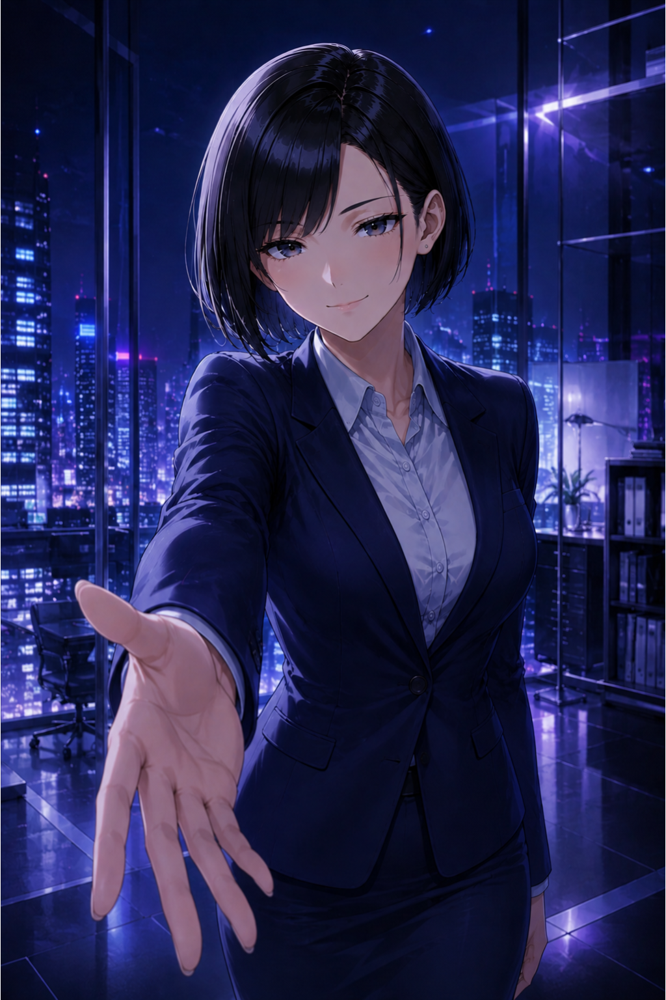

PLAYER Lv.1
次のLvまで 100 EXP
CLEAR 0
INTERVIEW
面接
初級・中級・上級・ケース面接
TRAINING
トレーニング
敬語クイズ・就活専門用語
INTERVIEW TRAINING
面接モード選択
挑戦する面接モードを選んでください。
BEGINNER
初級
入室から退出までの基本マナー
INTERMEDIATE
中級
自己PR・志望動機・深掘り質問
ADVANCED
上級
最終面接・圧迫気味の質問・価値観の深掘り
CASE INTERVIEW
ケース面接
対話で進める構造化・仮説・施策提案
メインへ戻る
TRAINING
トレーニング
言葉遣いと就活知識を、櫻みゆきと一緒に磨きましょう。
KEIGO QUIZ
敬語クイズ
尊敬語・謙譲語・丁寧語を2択で練習
JOB TERMS
就活専門用語トレーニング
初級から上級まで、就活用語をゲーム感覚で確認
メインへ戻る
戻る
画像が見つからない場合でも、この画面はそのまま操作できます。
Q1
面接官
次の質問へ
戻る
RESULT
櫻みゆき
判定
もう一度プレイする
メインへ戻る